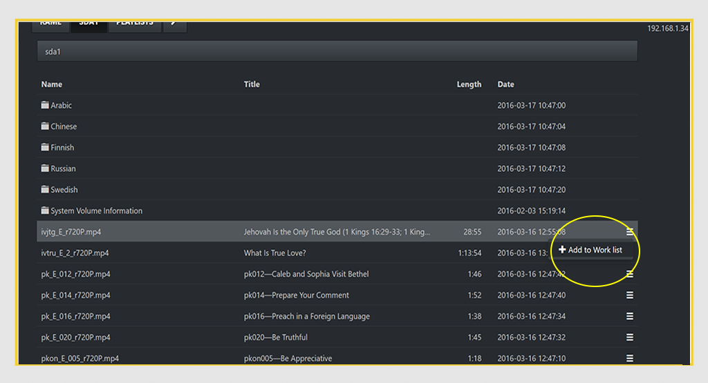
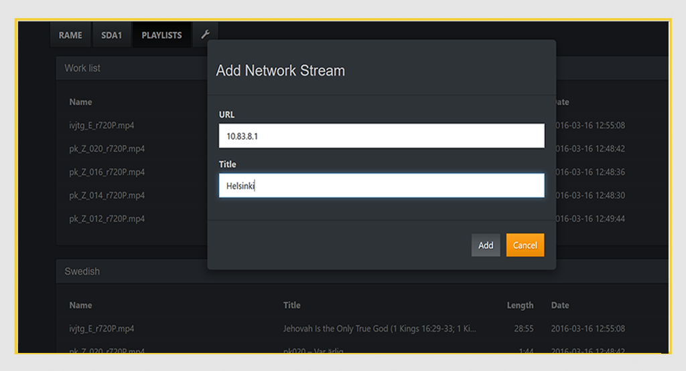
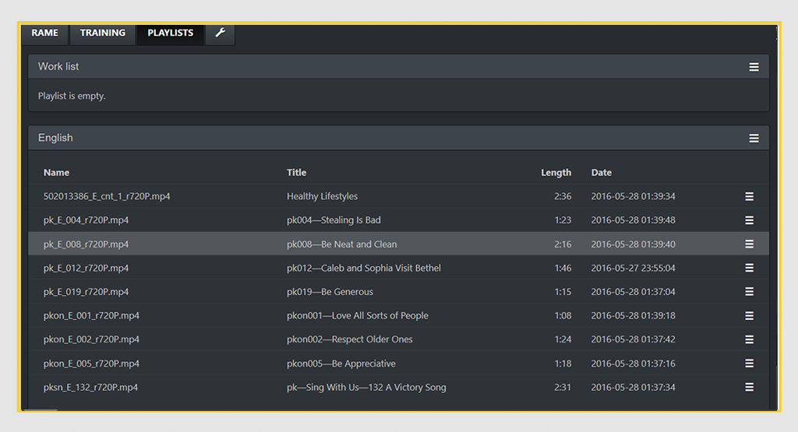
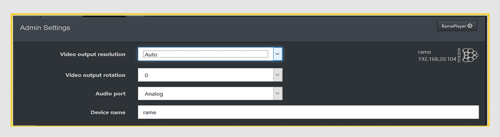
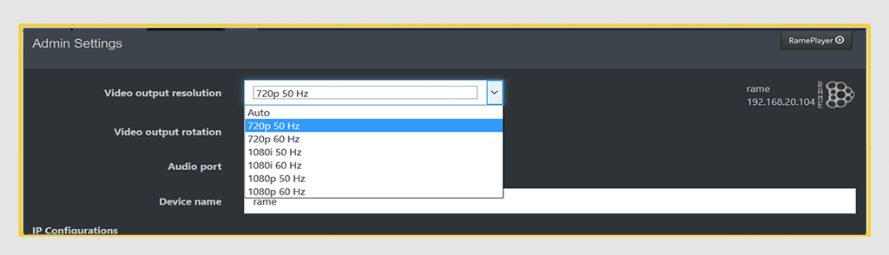

RamePlayer Manual & Help
Player Usage
You can see the WebUI access IP-address from the LCD screen of the player. Connect to it from any computer connected to the same network. Load up the required files into an USB-drive and insert it into the USB-port. You will see a tab in the WebUI for the USB drive. Pick the files you need into a Work list by pressing the button next to the file and press
"+Add to work list".
Go to Playlist tab and save the playlist by selecting "Save as" from the drop down menu next to the Work List title. Select files from the saved playlist and press play/pause/stop to use. You can also skip by pressing somewhere along the timeline.
Playlists
You can add files into the Work list from an USB-drive by going into the USB-drive tab and then from the wanted file, click "+Add to Work List" from the dropdown menu.

From the Playlist Tab you can save the Work list from the dropdown menu by selecting "Save as".
Adding Streams
You can also choose to add Streams into the work list from the dropdown menu by selecting "Add stream".
Insert the address of the stream into the URL field and name the stream. Select the stream from the playlist and press play to watch stream.
Configuring Cluster
To set up Cluster for use in RamePlayer, first go to the web UI of the Main Player unit.
Go to Settings (the spanner icon)
and in the Cluster settings, press the "Add Unit" button

Write IP addresses of other RamePlayers to the IP Address field, default port is 8000. Use a delay of 10 seconds for Backup players.
Press "+Add" to add the player to the cluster.
Insert all players to the cluster except the Main player.
Cluster of 2 players ready (main player and one backup player with a 10 second delay).
Synchronizing playlists
Creating playlists for players
Every player should have their playlist set up ready in their language, see Player usage for more help with playlist

Playlist saved as "English" is ready for synchronizing.
Sync playlists
To control a cluster of players, the playlists must be synced to start together:
1. From the saved playlist of the Main player: press the settings button on the right hand corner and select "Synchronize"
2. Select the correct player and playlist to use
3. Repeat for every additional player in the cluster
Remember that all of the playlist sync settings have to be done from the Main Player unit
Use
To use the cluster, use only WebUI of Main player
Admin Settings
TODO
Connecting to other hardware
Connecting to ATEM mixers
To connect Rameplayer with ATEM mixers, you should change RamePlayer resolution to 720p / 50hz. To do that go to Settings-->Admin Settings
Change the Video output resolution from AUTO to 720p / 50hz

Save the settings and boot the RamePlayer. You might need to remove the HDMI cable from the ATEM mixer and reattach it for ATEM to recognize the changes.